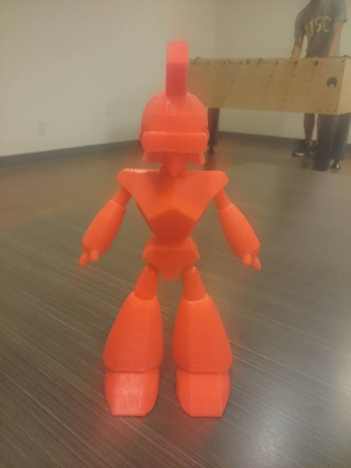
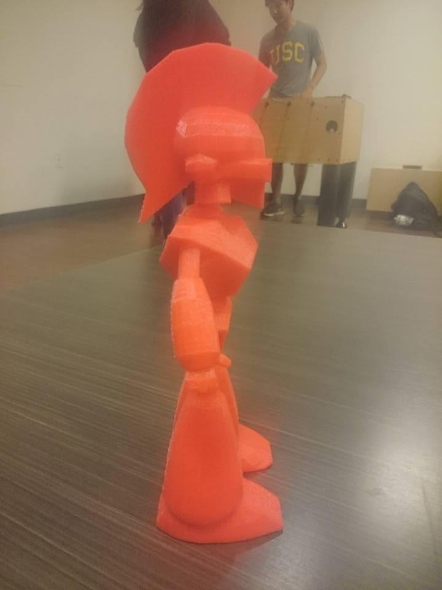

USC MEGA holds these cool things called "Game Jams", which are essentially 24-hour hack-a-thons dedicated specifically to making games! I participated in it, and I teamed up with a group of 7 total people to build a game from the bottom-up. We made a game called "Humane Society Simulator". The player plays as a dog who is trying to get adopted by customers at the pet store. The dog has various "stats" (cuteness, strength, endurance, etc.), and potential pet-owners at the store are looking for pets with a certain distribution of these stats. Your goal is to train your dog, through a series of mini-games, so that it resembles this ideal distribution of stats as closely as possible, thus allowing your dog to be picked over the other dogs in the store. Most of the members on the team each made a mini-game to contribute to the overall game, with one person doing soundtrack and another doing the art. Our game won Best in Show for the Fall, 2016 GameJam, so we were pretty dang proud of that :]
The game can be played at https://csharp.itch.io/human-society-shelter
So this was a really gruelling process, considering my roommate and I have basically no experience with modeling or 3D printing whatsover...nevertheless, we made this guy in one semester! It's a 3D-printed model of a Trojan Action Figure that has recently been made the mascot of 3D4E at USC. This took a lot of time and effort, so we were really proud of how it turned out!
The idea for this guy came to us right after our first meeting of 3D4E. My roommate and I were placed into an entirely new project group, the "Animation" Team, and to be honest, we were clueless on what to do. I mean, this was the first time the club ever had an Animation team before. After the meeting ended and after walking around a bit in the cold, I suddenly thought of the idea to make superhero action figures, kind of like the "International Justice League of Super Acquaintances" from SpongeBob! Then I thought about Parks and Recreation, and how poor Ben Wyatt took forever just to shoot 5 seconds of his claymation movie. So I thought, "Hey, why don't we 3D-print action figures and make claymations out of them?" Of course, we knew that animating solid objects would prove challenging and tedious, but considering that was the only idea we could think of, we had no choice.
First, we had to learn the entire interface of a modeling program. Because we were officially the "Animation" Team, we decided to learn AutoDesk: Maya 2016 and use that to model our little friend. Plus, we thought we could use the software to simulate our model's animations before we got around to physically animating it. My roommate designed all the concept art for the model (I'm not an artist), so we transfered his designs into Maya to use as references for sculpting and modeling. Sure enough, through a combined effort, it took us about 3 days to fully model the Trojan in Maya. In an even more surprising turn of events, it only took us ONE print to achieve a successful iteration (we were REALLLLYYY lucky haha). Our semester's worth of hard work paid off with the work of art you see here. Super happy with the results :)
Our main task now is to put joints into this model so that we can animate it. From there, we'll have to figure out how to be really patient when we film him!
Global Game Jam 2017 was a blast! Met some wonderful people and made an awesome game in Unity! Good luck trying to get past the first level ;)